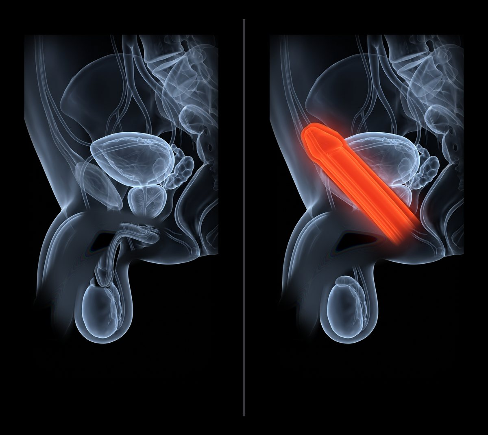
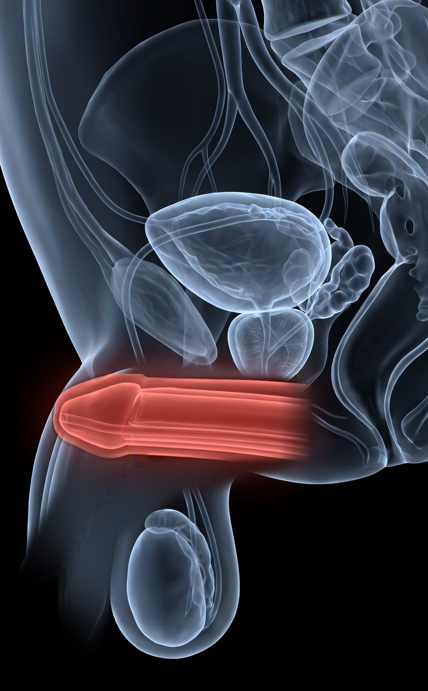
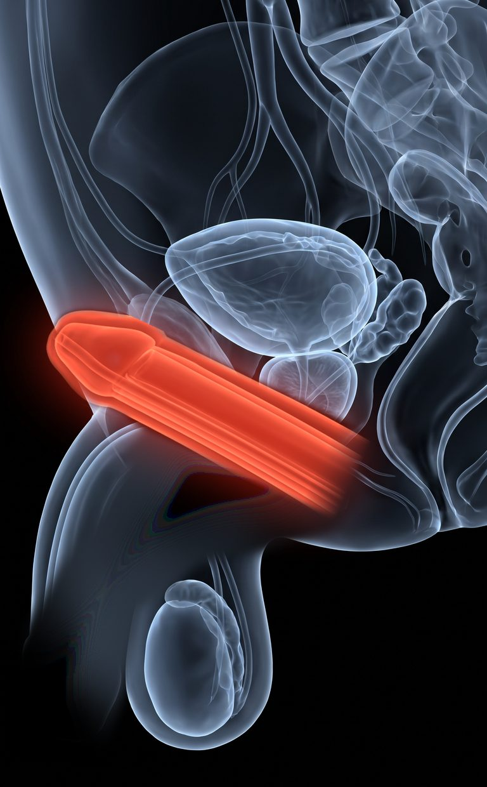
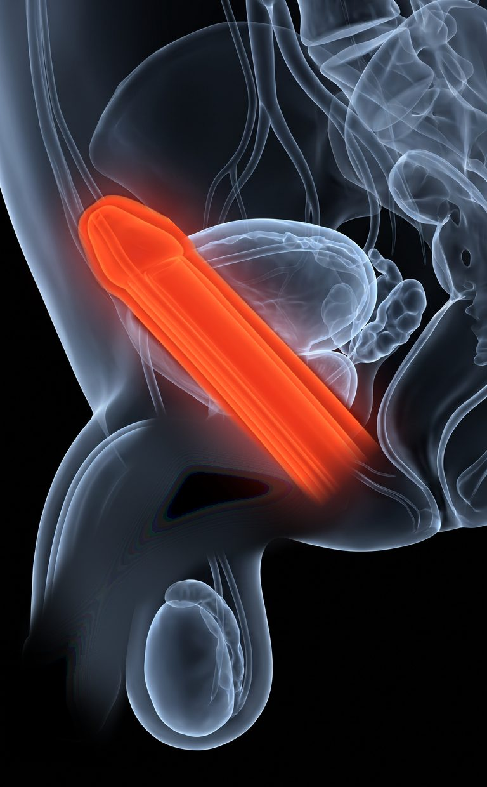

Men's Health Notes
In 2026, swallowing the pill costs you the WEEKEND.

Stick with me, and I'll show you how you can be ready the minute she is, from Friday night into Sunday morning, without planning a thing.
A tablet that melts under your tongue can now work in about 15 minutes or less for some men, and one dose can last 24 to 36 hours.
BUT : if you still swallow a pill and wait for it, you're planning sex like a dentist appointment, and she notices every time you glance at the clock.
Every planned night that falls flat teaches her one thing: stop reaching for him. After enough of those nights, she stops.
The good news : it's an easy fix. In a trial of 348 men, 36 hours after one dose of tadalafil, the long-lasting ingredient, men had sex successfully twice as often as men on a placebo.
Below I'll break down the 3 changes. No waiting room, no pharmacy line, and nobody you know ever has to hear about it.
The research in this note: Journal of Urology · Urology · Journal of Sexual Medicine · sources at the end
The whole difference comes from 3 changes in how you take it, not in how hard you try.
- Change #1 : Stop swallowing it. Let it melt under your tongue, and it can work in about 15 minutes or less.
- Change #2 : Stop timing sex. For many men, one dose lasts 24 to 36 hours.
- Change #3 : Stop fixing only the blood flow. A third ingredient works on wanting it, through a different pathway.
Do these and your weekend will
- start when she leans in, not when a pill decides
- still be on the table on Saturday morning
- feel like wanting her again, not like getting through it
+ she stops waiting for your excuse.
15 minutes. Up to 36 hours. And the want back.
First: why listen to me?
I'm not a doctor, so I won't ask you to trust me. Trust the researchers. Everything below comes from a published study, and I name every one.
Start with this one. When researchers near Boston surveyed men aged 40 to 70, 52% had some trouble getting or staying hard, from mild to complete.[1] Massachusetts Male Aging Study, Journal of Urology, 1994
So if it's happening to you, nothing is wrong with you. You're the majority. I read the fine print on all of it, so I can tell you what works, what the box leaves out, and which of you should close this page.
(Full honesty: this page has affiliate links, so I get paid if you click. I'm telling you now, because in a minute you'll watch me talk some of you out of it.)
So trust the studies when I say this.
The pill was never the real problem. The clock was.
Here's what changes when you take it differently.
Change #1: Stop SWALLOWING the "little pill"
Ready in about 15 minutes, for some men
This sounds a tad crazy. The fastest way to take it is to not swallow it at all.
When you swallow a pill, it goes down to your stomach first, and only after that does it start to work. So you take it, and you wait, and you watch the clock, and she watches you watch the clock.
Under your tongue, there are tons of tiny blood vessels sitting right below the surface. A tablet that melts there gets in faster, because it doesn't take the long way through your stomach.
But speed isn't even the point.
The big change is this: you stop scheduling it. You stop being the guy who needs a head start before he can touch his own wife.
Two steps get you there. Step 1: let it melt instead of swallowing it. Step 2: take it about 30 minutes before, on the nights you can.
Step 1: Let it melt. Don't swallow it.
This is the KEY to being ready when she is.
You put the tablet under your tongue and let it dissolve. You don't have to leave the room, and you don't have to make a show of it.
Some men feel it in about 15 minutes or less. The timing is different for every man, because every body is different.
Here's the Friday night that makes or breaks it
Picture a Friday, 9:40 p.m., in a house in Columbus, Ohio. The kids are finally asleep, and she sits down on the couch a little closer than usual. With the old pill, you excuse yourself, swallow it in the bathroom, and come back to wait. You talk about nothing. She checks her phone. By the time you're ready, she's asleep with the TV still on, and you sit there in the blue light knowing she'll try a little less next time.
And she loses that night too. When researchers asked 293 women whose partners had this problem, their own satisfaction, and how often they reached orgasm, fell right along with his.[4] Fisher et al., Journal of Sexual Medicine, 2005
The moment doesn't wait for a pill. So the pill has to stop making you wait.
The diagram below breaks this down.
Two Friday nights at 9:40 p.m. With the swallowed pill, he takes it in the bathroom, they wait, and by the time it works she's asleep. With the tablet under his tongue, it melts right there and can work in about 15 minutes, so at 9:55 he's ready and they're still together on the couch.
If you'd rather never plan it again, the 3-in-1 tablet melts under your tongue.
That's step 1. Now the dose and the moment start together. NOW step 2 makes sure it's at its best when it counts:
Step 2: Take it about 30 minutes before, when you can
Around 30 minutes before is when it peaks.
Some nights you know. It's your anniversary, the kids are at her mother's, and the table is booked for 7. On those nights you take it about 30 minutes before you think you'll need it, so it's at its best when she reaches for you. On the nights you don't know, the 15 minutes is your safety net. Either way, you're never again the man asking her to hang on a minute.
You can plan it. You just don't have to.
That's your first change: about 15 minutes, for some men. It's exactly how the 3-in-1 tablet works, see it here. Now the second change, and the 36 hours.
Change #2: Stop TIMING sex like an appointment
One dose, 24 to 36 hours for many men
This one sounds backwards. The best dose is the one you forget you took.
When the window is short, every night turns into a test you have to pass on schedule. Miss the window, and you've failed the test, even if she never says a word about it.
You know the Saturday morning I mean. She rolls over at 7:10, warm and half asleep, and you have to say "later," because you didn't plan for a Saturday morning. She says "it's fine." It isn't fine, and you both know what "later" means.
So the second ingredient, Tadalafil, is there for the long haul. Its job is longer-lasting support and a wider window, and for many men the effect lasts about 24 to 36 hours.
And that's been tested. Researchers gave 348 men, average age 57, one dose of tadalafil and had them try 36 hours later. 59% of those tries worked, against 28% on a placebo. Twice as often, a day and a half after the dose.[2] Porst et al., Urology, 2003
But the hours aren't even the point.
The big change is this: Saturday morning goes back on the table, and so does Saturday afternoon.

Here it is in motion:
One dose taken Friday at 9 p.m. A solid bar covers 24 hours, to Saturday 9 p.m., and a lighter bar runs on to 36 hours, Sunday 9 a.m. Checkmarks land on Friday night on the couch, Saturday 7:10 a.m., Saturday 3 p.m., and, for some men, Sunday 7:30 a.m.
That's your second change: up to 36 hours from one dose. Now the third change, the one most men never hear about.
Change #3: Stop fixing only the "plumbing"
3 ingredients for 3 parts of it
Nobody tells you this part. Being able to and wanting to are two different things.
A typical pill relies on a single active ingredient, and its job is blood flow. That's half the story at best, because sex starts in your head long before it starts anywhere else.
The 3-in-1 tablet splits the job three ways. Sildenafil is there for strength, and it comes faster. Tadalafil is there for the long window. And Apomorphine works on arousal and responsiveness through a different pathway, because wanting her is part of it too.
Researchers describe Apomorphine as working on the brain's own arousal centres, the hypothalamus, where the whole response starts, not on the blood vessels at all.[3] Review of sublingual apomorphine, 2002

The big change is this: you stop treating one part and hoping the rest shows up.
The diagram below breaks this down.
Two tablets of the same size. The one-ingredient tablet covers one part of the response, firmer and faster. The 3-in-1 tablet covers all three: Sildenafil for strength, Tadalafil for the long window and Apomorphine for arousal.
That's your third change. Now, before you click anything, there's something I have to tell you.
But this still doesn't cut it
I get paid when you click, and I'm still telling some of you to close this page.
This will sound crazy coming from me, since I make money when you buy.
But, confession: this tablet is not for every man. If you take nitrates for your heart, or a guanylate cyclase stimulator, it is not for you. And it can have side effects: headache, flushing, a stuffy nose, indigestion, dizziness, nausea, back or muscle aches, vision changes that pass, or irritation under your tongue.
I'd rather lose the sale than have you find that out the hard way.
What I'd actually do instead
Don't buy anything off a page like this one. Answer the questions first.
Let me explain.
The tablet is prescription only, so before anything ships, you fill out an online health assessment, and a licensed healthcare provider reviews it. And the provider being allowed to say no is the best part of the deal.
This gives you:
- No waiting room, and nobody from church in line behind you at the pharmacy
- A licensed provider who reads your answers before a prescription is issued
- A strength and a package that fit you, not one size for every man
- Discreet delivery to your door
- Ongoing access to medical support if you have questions later
Every man's body is different, and so is every man's heart. So the dose should be decided by a provider who read your answers, not by a guy on the internet. Period.
That's how you get the 15 minutes and the 36 hours without the guesswork.
The hard part happens on your couch
I know that sounds like a lot of hassle. But it's a few questions online, from wherever you are, and the provider does the rest. No need to sit in an office and say it out loud to a stranger. Start with the questions.

The Easy Way To Do All Of This
Look, I get paid if you click, so of course I'd love you to try the 3-in-1 tablet. But make no mistake. Whether you use it or not, in 2026 you must:
- Stop swallowing it, or keep losing the moment to the clock.
- Stop timing sex, and get a window that covers the whole weekend.
- Stop fixing only the blood flow, and treat the want too.
Do all three and you get about 15 minutes, up to 36 hours, and the want back (or at least a Saturday morning that doesn't end in "later").
By all means, you can try to piece it together yourself, one prescription at a time.
But if you'd like a shortcut: one tablet under your tongue does all three, a licensed provider decides if it's right for you, and it's delivered discreetly to your door.
If you want her pulling you back under the blanket on a Saturday morning, without a waiting room, tap the link below, fill out the online assessment and let the doctor do the rest. Get your strength back now.
→ Read the 3 ingredients and who it's not for: the full side effects and safety page, before you decide.
That's all!
Mercer
Sources
- Feldman HA, Goldstein I, Hatzichristou DG, Krane RJ, McKinlay JB. Massachusetts Male Aging Study. Journal of Urology, 1994;151(1):54-61. PubMed
- Porst H et al. Randomized controlled trial of tadalafil at 24 and 36 hours after dosing, 348 men. Urology, 2003;62(1):121-125. PubMed
- Review of sublingual apomorphine, 2002. PubMed
- Fisher WA, Rosen RC, Eardley I, Sand M, Goldstein I. The FEMALES study, 293 female partners. Journal of Sexual Medicine, 2005;2(5):675-684. PubMed